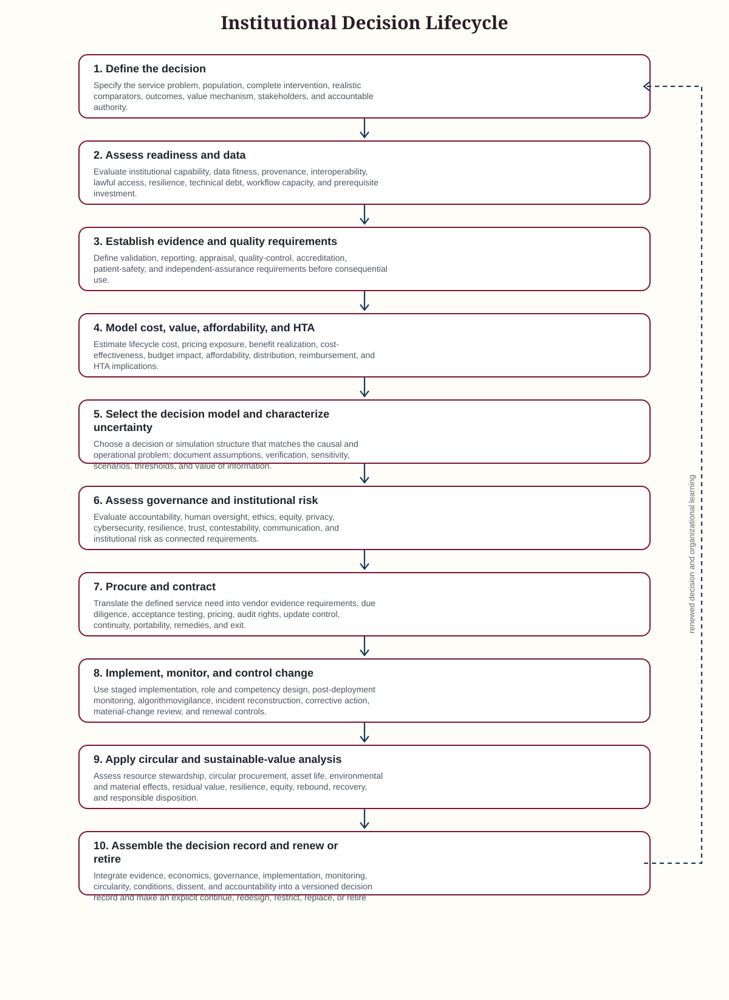

Cross-cutting process
Master Institutional Decision Lifecycle
The ten-stage lifecycle connects the revised book architecture to an institutional sequence from problem definition through monitoring, renewal, replacement, and retirement. The sequence is iterative rather than strictly linear.
Use rule. Advance commitment only when evidence, readiness, value, mandatory safeguards, accountable authority, and reversibility are proportionate to the next decision.

Stages
| Step | Stage | Purpose | Expected Output | Decision Or Gate |
|---|---|---|---|---|
| 1 | Define the decision | Specify the service problem, population, complete intervention, realistic comparators, outcomes, value mechanism, stakeholders, and accountable authority. | Approved decision and use-case specification with decision rights and an evidence plan. | Is the problem sufficiently important and specified to justify further assessment? |
| 2 | Assess readiness and data | Evaluate institutional capability, data fitness, provenance, interoperability, lawful access, resilience, technical debt, workflow capacity, and prerequisite investment. | Readiness profile, remediation plan, data-provenance record, and decision on whether to strengthen foundations or continue. | Are critical prerequisites adequate for the intended level of consequence and dependence? |
| 3 | Establish evidence and quality requirements | Define validation, reporting, appraisal, quality-control, accreditation, patient-safety, and independent-assurance requirements before consequential use. | Evidence plan, local-validation specification, monitoring indicators, acceptance thresholds, and corrective-action route. | Is the planned evidence proportionate to intended use, uncertainty, and consequence? |
| 4 | Model cost, value, affordability, and HTA | Estimate lifecycle cost, pricing exposure, benefit realization, cost-effectiveness, budget impact, affordability, distribution, reimbursement, and HTA implications. | Economic specification, lifecycle cost model, benefit-realization register, affordability profile, and conditional economic recommendation. | Does the intervention have a defensible value proposition and a financeable path under realistic scenarios? |
| 5 | Select the decision model and characterize uncertainty | Choose a decision or simulation structure that matches the causal and operational problem; document assumptions, verification, sensitivity, scenarios, thresholds, and value of information. | Model specification, reproducibility record, uncertainty analysis, research priorities, and decision thresholds. | Is model complexity justified, credible, reproducible, and decision-relevant? |
| 6 | Assess governance and institutional risk | Evaluate accountability, human oversight, ethics, equity, privacy, cybersecurity, resilience, trust, contestability, communication, and institutional risk as connected requirements. | Integrated institutional-risk review, accountability matrix, transparency record, safeguards, and escalation authority. | Are mandatory safeguards satisfied and are residual risks explicitly owned and governable? |
| 7 | Procure and contract | Translate the defined service need into vendor evidence requirements, due diligence, acceptance testing, pricing, audit rights, update control, continuity, portability, remedies, and exit. | Procurement specification, vendor comparison, contractual requirements, price and volume conditions, acceptance tests, and exit position. | Can the institution enforce the evidence, monitoring, change, continuity, and exit conditions required for safe use? |
| 8 | Implement, monitor, and control change | Use staged implementation, role and competency design, post-deployment monitoring, algorithmovigilance, incident reconstruction, corrective action, material-change review, and renewal controls. | Staged implementation record, monitoring cadence, incident record, change-control record, benefit evidence, and updated decision dossier. | Does real-world use remain within approved performance, safety, workload, equity, cost, and governance conditions? |
| 9 | Apply circular and sustainable-value analysis | Assess resource stewardship, circular procurement, asset life, environmental and material effects, residual value, resilience, equity, rebound, recovery, and responsible disposition. | Circularity assessment, asset-option appraisal, circularity-adjusted evaluation, disposition plan, and sustainable-value dashboard. | Does the preferred option preserve health-system value while controlling material, environmental, resilience, and disposition burdens? |
| 10 | Assemble the decision record and renew or retire | Integrate evidence, economics, governance, implementation, monitoring, circularity, conditions, dissent, and accountability into a versioned decision record and make an explicit continue, redesign, restrict, replace, or retire decision. | Versioned AI-HED or equivalent decision dossier, final recommendation, review date, renewal or de-adoption decision, and transition record. | Is continuing use still preferable to redesign, restriction, replacement, or retirement under current evidence and alternatives? |